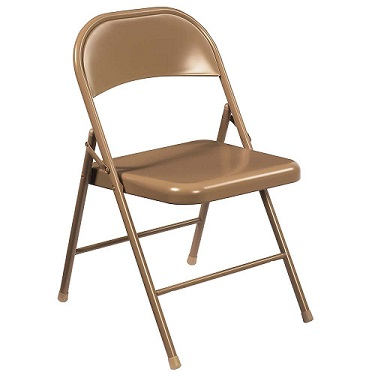

Chairs
The Pros and Cons to Throwing Chairs
So you've been wronged in life, whether by a random passerbyer, a known acquaintance, maybe a colleague at work, Student, Family member, boss, or maybe even...yourself.
Before you get up in arms with the poor soul who has crossed you lets take a moment and think of the consequences of your actions. Then we will look at the benefits hittiong someone with a chair has.
And awayyyyyyyyy we go!
Cons:
Depending on state to state legal charges may differ. For this excercise we will take a look at an incident in New Bedford, Massachusetts where a student hit his teacher who was older than 60 with a chair for taking away his phone.
Kemar Omar Roselus, 18, of New Bedford, allegedly threw a chair at his teacher, Joanne Moura, after she confiscated his phone. He has been charged with assault by means of a dangerous weapon on a person over 60, disturbing the school, and malicious destruction of personal property, officials say. He was also expelled from school.
In Massachusetts, under MGL c. 265 s. 15A, assault and battery with a dangerous weapon is a felony which carries up to 10 years in state prison and $5,000 fine.
- 10 Years in prison
- $5,000 Fine
- 10 Years you could've spent not in jail (rolling doubles won't get you out of jail)
- $5,000 you could've spent of boxes and boxes of Pokemon Cards
- You now don't have a chair because you threw it
- You have to sit on the floor
- A rat bites you because you couldn't stand on a chair to get away from it
- The rat gives you the bubonic plague
- Congrats, you just wiped out 1/3 of the human population
- was it REALLY worth throwing the chair
Pros:
For this section let's take a look at the scene of the movie Shrek, the scene where Shrek fights Farquad's knights in the boxing ring.
After someone throws Shrek a chair and screams "HIT HIM WITH THE CHAIR" Shrek goes on a rampage to go on and defeat the knights of King Farquad, eventually being tasked to find Princess Fiona who will eventually become Shreks wife. All the while befriending a Dragon, a talking Donkey, and other fairytale creatures.
- Defeating a bunch of a tyrant king's knights
- Going on a quest to save a princess
- Befriending a talking donkey AND Eddie Murphy at the same time
- Defeating a Dragon
- Befriending that dragon
- Saving a princess from a Tower
- Comparing yourself to an Onion
- Fighting a YMCA obsessed Robin Hood
- Crashing a wedding
- Marrying said princess
Conclusion:
As you can see, The Pros by far outweigh the Cons so go at it, hit that poor soul with the chair!
Ya know what, here's a chair on me that way you won't even break your own chair!
